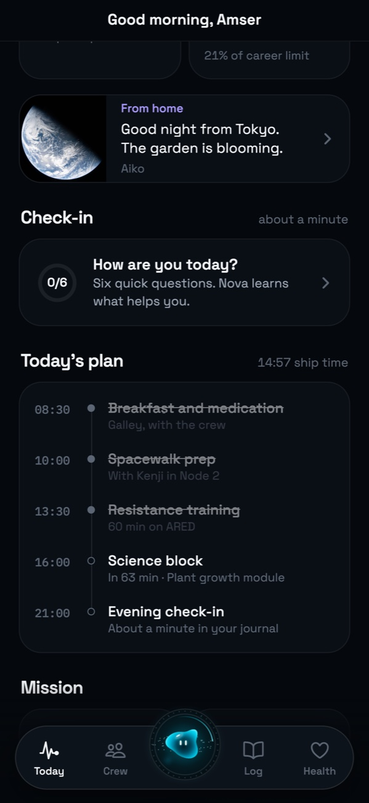

El teléfono de cada astronauta, enlazado con la nave y sin internet
La app NOVA (Expo SDK 57, React Native 0.86, expo-router; versión 0.9.4) tiene un modo misión. Con la dirección de la nave y el asiento (T1–T4) configurados, el teléfono deja de usar servicios en la nube y habla solo con el enlace de la nave por la red local: entrega sus lecturas y recibe el estado de la tripulación, la misión y Casa.
9:41
HoyResumen de NOVA, emergencia y signos que llegan de la nave
9:41

Hoy · más abajoCasa, check-in y el plan del día en hora de la nave
9:41
CrewCada compañero en vivo con el mismo código de color
Lo que el teléfono envía (src/cuenta/nave.ts)
Cada 5 s: pulso y VFC del reloj o banda, SpO₂, pasos, luz y ruido.
Cada minuto, si cambió: sueño de anoche y pulso en reposo.
Ánimo y energía del check-in solo con «Compartir mi día». Nunca el texto del diario.
Todo por POST /v1/lote; el núcleo lo trata igual que la estación.
Lo que el teléfono recibe (naveEstado.ts)
/v1/estado cada 5 s con la app abierta.
/v1/mision, tripulación y /v1/sistemas cada minuto.
/v1/casa cada minuto, guardado en el teléfono para verlo sin enlace.
Un único almacén para Hoy, Crew, Emergencia, Casa y el widget.
B&N · NASA Space Apps 2026
NOVA · Informe técnico10 · App móvil
10 · Emergencia, ciclo y la nave en el bolsillo
Funciones que siguen andando aunque se caiga el enlace
9:41
EmergenciaQuién y qué pasa
9:41
Guía de RCPSignos en vivo y fuente
9:41
CicloPrivado por defecto
9:41
Tú · La naveNúcleo, enlace y sesión
Emergencia
Parcial
Los mismos 12 protocolos de la nave dentro de la app (src/emergencia/protocolos.json), así que funcionan sin la nave y sin internet. La guía muestra los signos de la persona si hay enlace y cita fuente y páginas. Falta traducir algunos pasos que el teléfono todavía muestra en inglés.
Ciclo menstrual
Funciona
Basado en tres revisiones de licencia CC BY sobre salud femenina en vuelo. Modo de supresión con píldora continua, registro de sangrado y síntomas, aviso de píldora y cálculo de suministros hasta el fin de la misión. Se queda en el teléfono; compartir es opcional y va solo al informe privado del cirujano.
La nave y sesión privada
Sin publicar
La tarjeta «The ship» muestra el núcleo en línea, la distancia en minutos-luz y el último cambio enviado desde la Tierra. Debajo, la sesión privada con la psicóloga en la Tierra: NOVA envía los temas antes porque el video llega con 9 minutos de retraso. La tarjeta pasa tsc y lint y sale por OTA, pero todavía no tiene commit.
Widget de Casa
Funciona
Widget de pantalla de inicio en Android (react-native-android-widget) con el último mensaje de la familia. Se actualiza solo cuando llega algo nuevo. Build de prueba EAS 0.9.4 lanzado desde el commit e7d2aab.
Nota sobre la tarjeta «Mission dose» de Hoy
Muestra 214 mSv y el 21 % de un límite de carrera de 1000 mSv con un valor de ejemplo fijo en motor.ts, basado en la tasa de crucero medida por MSL RAD (≈ 1,84 mSv/día). El cálculo real con datos de radiación es parte del módulo pendiente.
B&N · NASA Space Apps 2026
NOVA · Informe técnico11 · Enlace de la nave
11
11 · Enlace de la nave: API y puertos
Una sola puerta HTTP para pantallas, teléfonos y Tierra
main.rs levanta un servidor axum en el puerto 8750 que sirve la interfaz, la consola de Tierra y estas rutas. Si la nave define NOVA_TOKEN, las rutas que escriben exigen la cabecera x-nova-token.
Ruta
Método
Para qué sirve
La usa
/v1/flujo
GET
Server-Sent Events con el estado a 1 Hz, alertas, eventos del núcleo y subidas
PC, Tierra
/v1/estado
GET
Estado completo: 4 tripulantes × 18 sensores, cabina y umbrales
teléfono
/v1/ingreso · /v1/lote
POST
Medición manual de la pantalla · lote de lecturas del teléfono hacia el núcleo
PC · teléfono
/v1/historia · /v1/resumen
GET
Serie de un sensor en una ventana · resumen de 24 h por tripulante
PC
/v1/mision
GET
Día, fase, distancia, retraso de la luz, elongación y conjunción
todas
/v1/preguntar · /v1/modelo
POST · GET
Ask NOVA en streaming · estado del modelo local
PC
/v1/decir
POST
Texto a voz con Kokoro (WAV)
PC
/v1/bitacora
GET · POST
Bitácora de emergencias, conversaciones e ingresos
PC, Tierra
/v1/privado
POST
Resumen con consentimiento que va solo al informe del cirujano
teléfono
/v1/escenario
POST
Escenario de demo al simulador (UDP 50053)
PC (tecla D)
/v1/biblioteca[/buscar|/recargar]
GET · POST
Catálogo, búsqueda semántica y recarga del paquete
PC
/v1/casa[/archivo|/respuesta]
GET · POST
Bandeja por tripulante, fotos y respuestas
teléfono, PC
/v1/casa/subida · /bajada
POST
Entrada desde la Tierra · retiro de respuestas
relevo Casa
/v1/sistemas · /comando
GET · POST
Núcleo traducido · comando a la cola de subida
PC, Tierra
/v1/tierra/informe
GET
Informe de la nave para la Tierra
Tierra
/v1/salud
GET
Comprobación de que el enlace está vivo
monitoreo
Puerto
Protocolo
De → a
Contenido
50050
UDP
estación, simulador, enlace → núcleo
Mediciones NDJSON con el contrato v1
50051
UDP
núcleo → enlace
Estado a 1 Hz y alertas
50052
UDP
enlace → núcleo
Ingresos manuales de la tripulación
50053
UDP
enlace → simulador
Escenarios de demo
50000
TCP
núcleo ↔ fprime-gds
Tramas CCSDS: telemetría, eventos y comandos
5080
HTTP
enlace → fprime-gds
API REST del sistema de tierra
8750
HTTP
pantallas, teléfonos, Tierra → enlace
Interfaz, consola de Tierra y API v1
8081/82/84
HTTP
enlace → modelos
Qwen3 4B · nomic v2 · Kokoro
B&N · NASA Space Apps 2026
NOVA · Informe técnico12 · Material real
12
12 · Material real de la NASA y fuentes abiertas
Lo que NOVA usa de verdad, con su licencia
Recurso
Qué es
Cómo lo usa NOVA
Licencia
Estado
F Prime v4.4.2
Marco de software de vuelo del JPL
Núcleo: componentes, puertos, parámetros, eventos, comandos y telemetría
Apache 2.0
En uso
fprime-gds
Sistema de tierra de F Prime
Transporte con el núcleo, diccionarios y API REST para Systems y la consola
Apache 2.0
En uso
CCSDS
Estándar de comunicaciones espaciales
Tramas y paquetes entre el núcleo y el GDS (ComCcsds)
Posición de la Tierra, Marte y la nave; retraso de la luz
Uso público
En uso
Guía de RCP en microgravedad (2020)
Hinkelbein et al., Scand J Trauma
Protocolo de paro cardíaco y metrónomo
CC BY 4.0
En uso
Salud femenina en vuelo (3)
Revisiones en npj Microgravity, Exp. Physiology, Frontiers
Base del módulo de ciclo
CC BY 4.0
En uso
BEC y lista de medicamentos de la OMS
Atención básica de emergencias
Anafilaxia, atragantamiento, hemorragia y convulsión
CC BY-NC-SA
En uso
MedlinePlus · OpenStax
Salud en lenguaje claro · anatomía
Explicaciones simples en Ask NOVA
Dominio público · CC BY
En uso
PhysioNet BIDMC
Registros reales de PPG y respiración
Variabilidad real del simulador
ODC-By 1.0
En uso
MSL RAD · DONKI
Dosis medida camino a Marte · clima espacial
Módulo de radiación (hoy solo la tasa de referencia)
Datos públicos
Previsto
OSDR / SOMA
Datos abiertos de biología espacial
Rangos esperados en vuelo (ESPERADO_VUELO)
Datos públicos
Previsto
Open MCT
Visor de telemetría de la NASA
Evaluado; Systems ya cumple ese papel con el diseño de NOVA
Apache 2.0
No usado
Regla del equipo: si una fuente no tiene licencia que permita llevarla a bordo, no entra. Por eso no hay manuales comerciales de urgencias en la biblioteca, aunque serían útiles.
B&N · NASA Space Apps 2026
NOVA · Informe técnico13 · Modelos y stack
13
13 · Modelos, stack y licencias
Unos 3 GB de modelos que caben en el computador de la nave
Modelo
Tarea
Tamaño
Cómo corre
Licencia
Qwen3-4B-Instruct-2507 Q4_K_M
Conversación
2,3 GB
llama.cpp llama-server, contexto 8192, todas las capas en GPU, plantilla Jinja
Apache 2.0
nomic-embed-text-v2-moe Q4_K_M
Vectores
337 MB
llama.cpp en modo embedding, pooling medio, 768 dimensiones
Apache 2.0
Kokoro-82M v1.0
Voz
337 MB
ONNX Runtime en Python, 24 kHz, voces af_heart y ef_dora
Apache 2.0
Biblioteca médica
Datos
56 MB
Fragmentos y matriz float32 en memoria
según fuente
Por qué un modelo de 4B
Cabe con holgura junto al resto de los servicios y responde en segundos en GPU local.
Las decisiones críticas ya no dependen de él: lo que importa es que explique bien y cite.
Su versión 2507 sigue instrucciones largas y responde en español o inglés según la pregunta.
Cómo se acota el modelo
Temperatura 0,2 y 400 tokens como máximo.
Contexto armado por el enlace con datos reales, umbrales, alertas, protocolos y fragmentos.
Emergencias resueltas antes de llegar al modelo; tres pruebas de cargo test cubren ese detector.
Pieza
Tecnología
Detalle
Núcleo de vuelo
F Prime 4.4.2 · C++17 · FPP · CMake
Python 3.12 en un entorno propio para fprime-util y fprime-gds
Todo el código y los modelos son Apache 2.0 o equivalentes. La excepción son el BEC y la lista de medicamentos de la OMS (CC BY-NC-SA 3.0 IGO): sirven para el hackathon y para investigación, pero un uso comercial futuro exige permiso de la OMS o reemplazarlos.
B&N · NASA Space Apps 2026
NOVA · Informe técnico14 · Seguridad y privacidad
14
14 · Seguridad clínica y privacidad
Reglas fijas donde hay riesgo, y la persona decide qué se comparte
Seguridad clínica
Umbrales en el núcleo de vuelo, con dos niveles y 10 s de histéresis para bajar.
Valores imposibles y lecturas de baja calidad no disparan alertas.
Pasos de emergencia literales desde un archivo versionado, con fuente y página.
El modelo de lenguaje no da pasos de emergencia ni diagnósticos.
Lo que reporta la tripulación manda sobre lo que dicen los sensores.
Cada guía deja bitácora con hora para el cirujano de vuelo.
Privacidad
Nada sale a internet: modelos, biblioteca y voz corren en la nave.
Ánimo y energía solo se comparten con «Compartir mi día». El texto del diario nunca sale del teléfono.
El ciclo menstrual es privado por defecto y nunca aparece en la pantalla de la tripulación.
/v1/privado lleva resúmenes con consentimiento solo al informe del cirujano.
La sesión con la psicóloga la ven solo la persona y su terapeuta.
Figura 9. Niveles de visibilidad de los datos. Lo que no está en la primera columna solo sale del teléfono con una acción explícita de la persona.
Riesgo
Mitigación actual
Estado
El modelo inventa un dato
Regla 1 del sistema, datos con antigüedad en el contexto, citas obligatorias y respuesta «no lo tengo medido»
Mitigado
Paso de emergencia incorrecto
Respuesta fija sin modelo; protocolos con fuente; revisión médica pendiente
Parcial
Alarmas falsas por un pico
Rango plausible, calidad mínima, histéresis y umbrales ajustables por la Tierra
Mitigado
Un tercero en la red de la nave
NOVA_TOKEN opcional en rutas de escritura; red sin salida a internet
Básico
Actualización maliciosa desde la Tierra
Diseñada con firma ed25519 y vuelta atrás; hoy solo se aceptan comandos del diccionario
Pendiente
B&N · NASA Space Apps 2026
NOVA · Informe técnico15 · Pendientes
15
15 · Pendientes, riesgos y plan
Lo que falta antes del 14 de noviembre
Orden acordado del plan: biblioteca, emergencias y salud femenina (hechas), luego la parte preventiva. En paralelo, la estación de Luis y la revisión médica.
Pendiente
Qué incluye
Responsable
Estado
Preventiva
Líneas base personales y tendencias (p. ej. pulso en reposo +10 lpm en 3 días), riesgo renal, SANS, pérdida ósea y sueño
Nicolás Moreno
Siguiente
Vistas Sleep, Mind y Body en PC
Vistas nuevas en la pantalla de la nave con los datos del teléfono y la preventiva
Nicolás Moreno
Pendiente
Ciclo nocturno
Informe automático cada noche y mejoras desde la Tierra como paquete firmado con ed25519, verificado a bordo y con vuelta atrás
Nicolás Moreno
Parcial
Radiación
Dosis acumulada con la tasa de MSL RAD y alerta por evento solar con DONKI; reemplaza el valor fijo de la app
Nicolás Moreno
Pendiente
Rangos esperados en vuelo
Nivel ESPERADO_VUELO con datos de OSDR / SOMA
Nicolás Moreno
Pendiente
Estación médica física
Confirmar sensores y placa; conectar por USB serie o UDP con el contrato v1
Luis González
Esperando
Revisión clínica
Un médico asesor revisa los 12 protocolos y los umbrales de partida
Por conseguir
Riesgo
Sueño, ánimo y sesión privada
Validar el protocolo de bienestar y el flujo con la psicóloga
Ambar Martínez
Por revisar
Pasos del teléfono en inglés
Traducir los pasos de emergencia que la app todavía muestra en inglés
Nicolás Moreno
Parcial
Tarjeta «La nave»
Commit y publicación por OTA de EstadoNave.tsx
Nicolás Moreno
Lista
Riesgo: reglas de Space Apps
Parte del trabajo existe antes del hackathon. Hay que revisar qué permiten las reglas sobre trabajo previo y declararlo con claridad en la entrega para no arriesgar la descalificación.
Riesgo: hardware a tiempo
Si la estación no llega, la demo usa el simulador con datos reales de PhysioNet. El núcleo no cambia: el contrato es el mismo.
Figura 10. Propuesta de calendario hasta la entrega, sujeta a lo que acuerde el equipo.
B&N · NASA Space Apps 2026
NOVA · Informe técnicoAnexo
A
Anexo · cómo levantar todo
Seis procesos y la nave queda andando en un solo computador
Así se levantó cada captura de este informe en el Mac de desarrollo (Apple Silicon). Cada bloque corre en su propia terminal desde ~/nova-pc.
# 1 · núcleo de vuelo y sistema de tierra (lanza Nova_Nave conectado por TCP 50000)source vuelo/fprime-venv/bin/activate && cd vuelo/Nova/Nave
fprime-util build -j12
fprime-gds -g html --gui-port 5080
# 2 · modelo de lenguaje y modelo de búsqueda (llama.cpp)
llama-server -m ~/.nova-pc/modelos/Qwen3-4B-Instruct-2507-Q4_K_M.gguf --port 8081 -c 8192 -ngl 99 --jinja
llama-server -m ~/.nova-pc/modelos/nomic-embed-text-v2-moe.Q4_K_M.gguf --embedding --pooling mean \
--port 8084 -c 2048 -ub 2048 -b 2048 -ngl 99
# 3 · voz de NOVA (Kokoro, :8082)
cd voz && .venv/bin/python servidor.py
# 4 · estación simulada con datos BIDMC (escenarios: desmayo T3, hipoglucemia T1, fiebre T2, hipoxia T4, co2, normal)
python3 estacion/simulador/simulador.py
# 5 · enlace y pantalla de la nave (:8750); --sin-ventana para solo el enlace
cd tripulacion/src-tauri && cargo run
./target/debug/nova-tripulacion --sin-ventana
# 6 · pruebas del detector de emergencias
cargo test
# preparar la biblioteca (en la Tierra)
cd biblioteca && .venv/bin/python indexar.py
# → ~/.nova-pc/biblioteca# mensaje de la familia
python3 tierra/casa.py enviar --trip T2 \
--de "Ana" --relacion "wife" \
--texto "We miss you!" --foto playa.jpg
python3 tierra/casa.py bajar
# app móvil (~/nova-app)
npx expo start
# en la app: modo misión + enlazar la nave# url http://<ip-del-pc>:8750 · asiento T1–T4# consola de Tierra
open http://127.0.0.1:8750/tierra/
# escenario de demo desde la pantalla# tecla D en NOVA PC
Dato de este informe
De dónde sale
Umbrales y eventos
vuelo/Nova/Components/MonitorSalud/MonitorSalud.fpp y .cpp